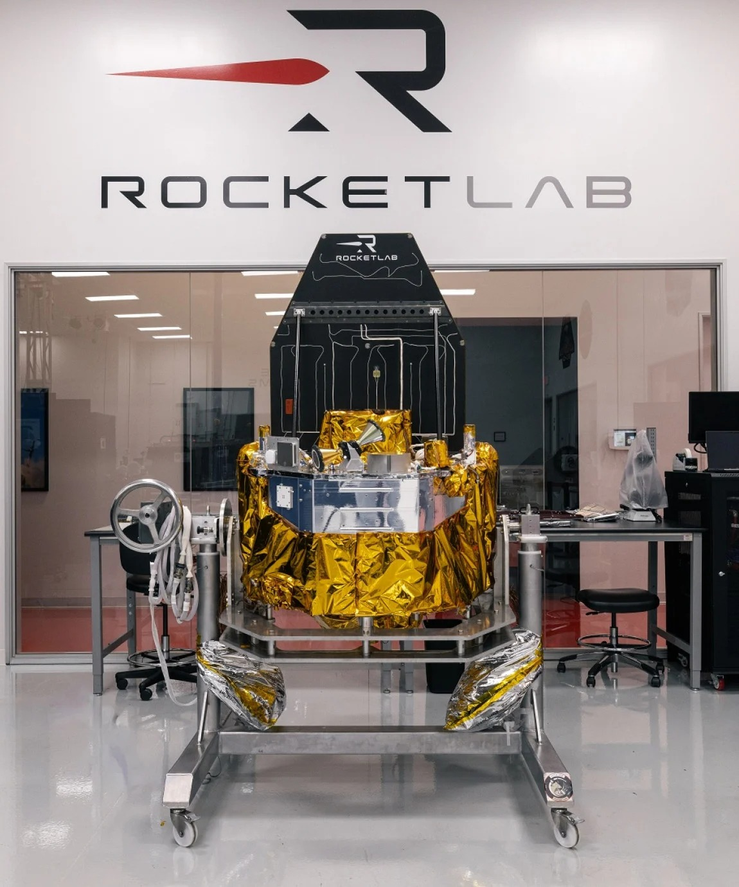

SpaceX vs Rocket Lab美国国防航天与运载体系的两条路线
这篇研究把 SpaceX 与 Rocket Lab（火箭实验室）放到同一张“国家安全太空基础设施”地图上：前者已经形成发射、卫星、网络与运营的规模化闭环；后者正在用小型快速响应发射、卫星 Prime（主承包商）能力和不断内生的载荷/光通信/推进系统，建立一套更轻、更分散的第二条供应链。
两种垂直整合路线
这组研究，起点是一则看似并不宏大的新闻：美国太空军披露，参与 Golden Dome（金穹）SBI（Space-Based Interceptor，天基拦截器）竞赛的 12 家供应商全部通过 Gate 1（第一阶段：设计与组件级测试）。“第一关全员通过”本身不足以改变任何一家公司的盈利模型，却把一个更重要的问题推到台前——当美国把本土导弹防御从地面拦截扩展到低轨传感、太空数据网络、AI 指挥控制与天基拦截，谁会成为真正的基础设施供应商？
由此，这个专题被拆成上下两篇。本篇从公司出发，比较 SpaceX 与 Rocket Lab 在国防航天和运载体系中的两条垂直整合路线；配套的 《美国 Golden Dome（金穹）国防航天产业投资地图》则从系统出发，把任务链、预算口径、入选公司、真实合同与股票表现放进一张图。前者回答“两个 New Space Prime（新航天主承包商）如何竞争”，后者回答“任务与资金会沿哪条链条流向哪些公司”。
SpaceX 赢规模与网络，Rocket Lab 赢弹性与第二供应链价值
这四个数字说明，比较两家公司不能只从“火箭吨位”开始。下一步先把型号谱系理顺，再看各型号在国防任务里解决的到底是哪一种问题。
先把型号谱系理清：轨道运载、亚轨道测试与可部署航天港不是一回事
| 产品 | 中文角色 / 代际 | 核心任务 | 国防含义 |
|---|---|---|---|
| Falcon 9 | 猎鹰9号：SpaceX 现役主力两级轨道火箭，第一级可复用 | 中型/大型轨道任务、高频商业与军用发射 | 规模、可靠性与国家安全任务记录已经形成。 |
| Falcon Heavy | 猎鹰重型：由三枚 Falcon 9 一级核心构成的重型火箭 | 高能轨道、重载、深空与国家安全任务 | 补足 Falcon 9 以上重载层级，但发射频率更低。 |
| Starship | 星舰系统：Super Heavy（超重型一级）+ Starship（上面级/飞船），目标全系统快速复用 | 超重载、大星座补网、深空 | 若稳定复用成立，可重写大规模军用星座与 SBI 补网成本。 |
| Electron | 电子号：Rocket Lab 小型轨道火箭 | 小卫星专属发射、精准轨道、快速响应 | 不与 Falcon 9 拼吨位，而以任务灵活性与调度响应建立价值。 |
| HASTE | Hypersonic Accelerator Suborbital Test Electron：基于 Electron 衍生的高超声速亚轨道试验火箭 | 携带试验载荷进入高速亚轨道环境，不执行常规入轨 | 为高超声速目标、传感器、拦截器等提供真实飞行测试环境。 |
| Neutron | 中子号：Rocket Lab 下一代中型、一级可复用火箭 | 星座部署、国家安全中型运载、深空任务 | 决定 RKLB 能否从小型响应式发射跨到更大价值池。 |
| GHOST | Global Hypersonic & Orbital Spaceport Technology：全球高超声速与轨道航天港技术 | 把 Electron/HASTE 的发射基础设施、地面支持和靶场控制封装成标准集装箱模块 | 让小型轨道/亚轨道发射能力可以转场部署；不是 Neutron 的移动发射台。 |
型号理顺后，一个容易被忽略的差异就出现了：Rocket Lab 并不是只在追求更大的 Neutron，同时还在把“小火箭 + 小卫星”做成更像战术资源的快速响应体系。
GHOST 的关键不是“移动一座发射台”，而是把小型发射能力模块化、可转场化
GHOST 的准确含义，是把 Electron（电子号）/ HASTE（高超声速亚轨道试验型电子号）所需的火箭、发射基础设施、地面支持与 Range Control（靶场控制）封装进标准运输集装箱，使这一套能力更容易在新的任务地点展开。它解决的是“发射能力跟着任务走”，而不是把 Neutron（中子号）所需的固定大型发射综合体整体搬迁。

Rocket Lab 官方实物图：VICTUS HAZE 所用 Pioneer（先锋号，高机动卫星平台）。该任务把卫星制造、Electron 发射与在轨 RPO（交会与近距操作）串成一条快速响应链。来源：Rocket Lab。

Rocket Lab 官方产品图：Lightning（闪电，中大型卫星平台）是其高功率、长寿命卫星平台，并被用于 SDA（太空发展局）相关星座方案。来源：Rocket Lab。
已经验证：响应速度
2026 年 6 月，VICTUS HAZE 在收到 Space Force 发射通知后约 16 小时 42 分完成 Electron 发射；随后 Pioneer 航天器在约 38 小时完成 commissioning（入轨启用）并执行 RPO（Rendezvous and Proximity Operations，交会与近距操作）。真正有价值的是“告警—发射—在轨行动”的连续闭环。
仍待验证：GHOST 的规模化部署
GHOST 于 2026 年 8 月公开。下一步应看第二个实际部署地点、从运输到 ready-to-launch（可发射状态）的时间、重复任务周转、靶场安全与客户是否形成常态化采购，而不是只看概念发布。
快速响应解决“什么时候、从哪里发射”，但国防航天价值链的大头并不只在火箭。真正让 RKLB 与 SpaceX 开始可比的，是两家公司都在向卫星、载荷、通信和运营继续延伸。
两家公司正在向同一个方向靠拢：从运载工具，变成端到端任务供应商
| 能力层 | SpaceX | Rocket Lab | 判断 |
|---|---|---|---|
| 轨道发射 | ●●● | ●● | SpaceX 规模领先；RKLB 的上限取决于 Neutron。 |
| 快速响应 / 分散部署 | ●● | ●●● | Electron/HASTE + GHOST + VICTUS HAZE 形成 RKLB 的差异化。 |
| 卫星平台制造 | ●●● | ●●● | SpaceX 有 Starlink/Starshield 工业化；RKLB 已进入 SDA 星座 Prime 阵营。 |
| 红外 / 任务载荷 | ●● | ●●● | RKLB 通过 GEOST 获得 Phoenix（凤凰，宽视场红外传感器）等能力。 |
| 激光通信 | ●●● | ●●● | RKLB 通过 Mynaric 获得 CONDOR Mk3（秃鹰三代，空间激光通信终端）。 |
| 全球网络运营 | ●●● | ● | Starlink/Starshield 的现成网络是 SpaceX 最大结构性护城河。 |
| Golden Dome / SBI | ●●● | ●● | SpaceX 直接参与 SBI OTA 竞争；RKLB 作为 Raytheon（雷神，RTX 导弹业务）团队伙伴切入卫星与发射能力。 |
产业栈解释了“为什么两家公司值得放在一起”；合同则回答更重要的第二问：美国政府是否真的愿意为这些能力付钱。
合同正在把 SpaceX 固化成基础设施，也把 RKLB 推过“Prime 身份”门槛
| 公司 | 项目 | 金额 | 购买内容 | 研究含义 |
|---|---|---|---|---|
| SpaceX | SB-AMTI（天基空中移动目标指示） | $4.16B | 从太空持续发现、跟踪与定位空中移动威胁 | 从“运卫星”进入“提供战场感知基础设施”。 |
| SpaceX | SDN Backbone（太空数据网络骨干） | $2.29B | 低延迟、光学互联的军用太空数据网络 | 获得 sensor-to-shooter（传感器到武器）的神经系统位置。 |
| SpaceX | SBST launch task orders（天基感知与瞄准发射任务订单） | $1.60B | 18 次 Falcon 9 发射任务 | 国防星座扩张继续反哺高频发射。 |
| Rocket Lab | T2TL-Beta（第二批次传输层 Beta） | $515M | 18 颗低延迟军用数据传输卫星 | 证明其不仅是 launch vendor，也是星座 Prime。 |
| Rocket Lab | TRKT3（跟踪层第三批次） | $816M | 18 颗导弹预警/跟踪/防御卫星 | 国防卫星 Prime 身份进一步升级，并拉动自有子系统。 |
| Rocket Lab | RSLP missile-defense launches（导弹防御亚轨道发射） | $266M | 12 次确定任务 + 最多 6 次额外任务 | HASTE 从试验产品进入批量军方采购。 |
| Rocket Lab + RTX | SBI（天基拦截器） | 原型阶段 | Raytheon 与 RKLB 团队验证太空拦截能力 | 若 SBI 量产，RKLB 可同时捕获 spacecraft（航天器）与 launch（发射）价值。 |
合同证明需求真实存在，但对股票而言，同样一笔合同落在不同收入基数上，财务弹性完全不同。
同样一笔 $1B 国防订单，RKLB 的报表重构幅度远大于 SpaceX
Rocket Lab 2025 年收入仍处于数亿美元量级，而 SpaceX 已经是百亿美元级综合航天平台。于是，数亿美元到十亿美元级的国防星座合同，对 RKLB 更容易改变未来数年的收入可见度、产能利用率与估值叙事；对 SpaceX 则更像进一步提高卫星工厂、网络和发射系统的共享效率。
SpaceX：规模 + 共享基础设施
Starshield（星盾，面向政府/国家安全的卫星平台与安全通信/遥感体系）、Falcon 9 与 Starship 可以共享制造、发射、地面站和软件能力。国防业务的关键不只是一张订单，而是让已有平台进入更高价值、更长期的政府基础设施层。
RKLB：小基数 + 高自产价值量
Lightning（闪电，中大型卫星平台）、Phoenix 红外载荷、太阳翼、姿控、推进、航电、任务软件与 CONDOR Mk3 光通信逐步内生。Prime 合同中真正留在公司内部的 BOM（Bill of Materials，物料清单）比例，决定收入最终能否转成更强的毛利与现金流。
因此，未来三到四年不是简单比较谁拿到更多国防合同，而是比较谁能把下一代运载与垂直整合兑现成可重复交付。
真正的分水岭：Starship 与 Neutron 是否把“下一代”变成可靠产能
| 情景 | SpaceX | Rocket Lab | 投资含义 |
|---|---|---|---|
| Base | Falcon 9 继续主力；Starship 稳步提高可靠性与周转率 | Electron/HASTE 高频；Neutron 完成关键飞行并逐步进入国安/星座订单 | 两者均受益，RKLB 因收入基数更小具更高经营杠杆。 |
| Upside | Starship 形成高频复用，显著降低大星座与补网成本 | Neutron 快速可靠化；GHOST 多地常态部署；卫星 Prime 订单滚动 | SpaceX 强化平台垄断力；RKLB 被重估为端到端国家安全太空挑战者。 |
| Downside | Starship 可靠性、监管或单位成本改善延迟 | Neutron 延误；固定价卫星合同成本失控；并购整合拖累现金流 | SpaceX 仍有 Falcon 9/Starlink 底盘；RKLB 的估值压缩风险更高。 |
四个问题，决定“RKLB 正升级为国家安全 Space Prime”能否成立
Rocket Lab 的反证条件
① Neutron 持续大幅延期：没有中型可复用运力，RKLB 很难进入更大任务价值池。
② TRKT3 / T2TL-Beta 固定价合同出现成本或进度失控：Prime 身份真正考验是复杂星座按期、按成本交付。
③ GHOST 没有形成第二个实际部署地点与重复任务：则它更像概念能力，而不是可规模化军事基础设施。
④ 国防收入增长但自由现金流持续恶化：垂直整合若不能转化为毛利和现金效率，收入增长不等于股东价值。
SpaceX 的反证条件
Starship 长期不能形成可靠复用、美国政府显著收紧对单一供应商的依赖、Falcon 9 外部任务槽位持续被内部需求挤压，或国家安全网络交付明显不达标，都会削弱“平台级基础设施”溢价。
下一步只盯能改变判断的硬指标
主要来源与网站内相关专题
EnyaClawd
Kerwin 负责选题、投资逻辑与最终审阅；Enya 负责证据整理、数据核验、可视化呈现与后续维护。